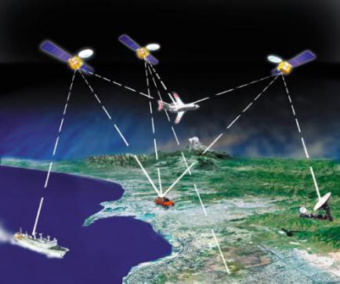
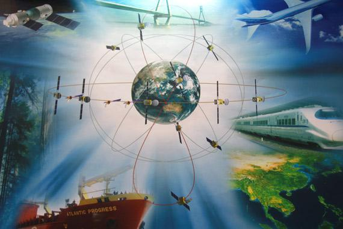
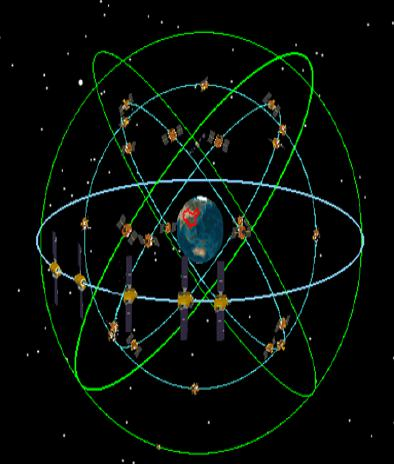

北斗卫星导航系统按照“先区域、后全球”的总体思路，制定了北斗卫星导航系统“三步走”的发展战略。
第一步：北斗试验系统区域有源导航。2000年12月通过双星定位建成北斗导航试验系统，使我国成为第三个具有自主卫星导航能力的国家。
第二步 北斗区域系统区域无源导航。2012年12月建成由14颗卫星(5GEO +5IGSO +4MEO)组成的北斗区域卫星导航系统，提供覆盖我国及周边亚太地区的导航、授时、测速及短报文服务。
第三步 北斗导航系统全球无源导航。2020年左右全面建成北斗全球卫星导航系统，形成30颗星(3 GEO +3 IGSO +24 MEO)的全球服务能力;可提供高精度、高可靠的全球定位、导航与授时服务，定位精度4米，并提供短报文通信服务。
